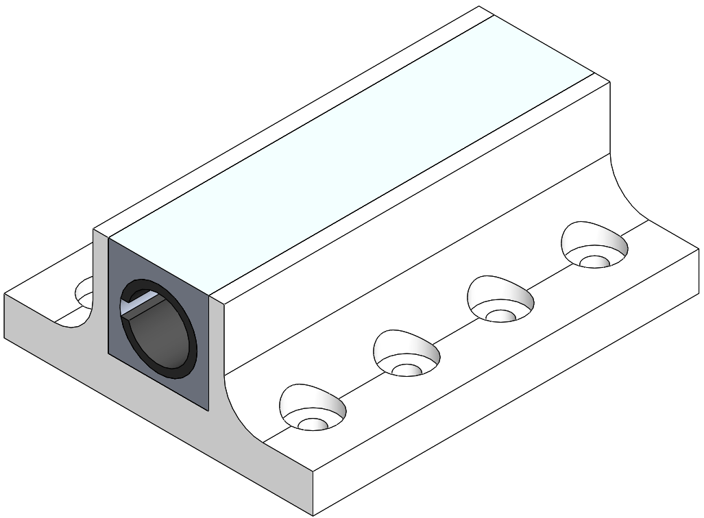
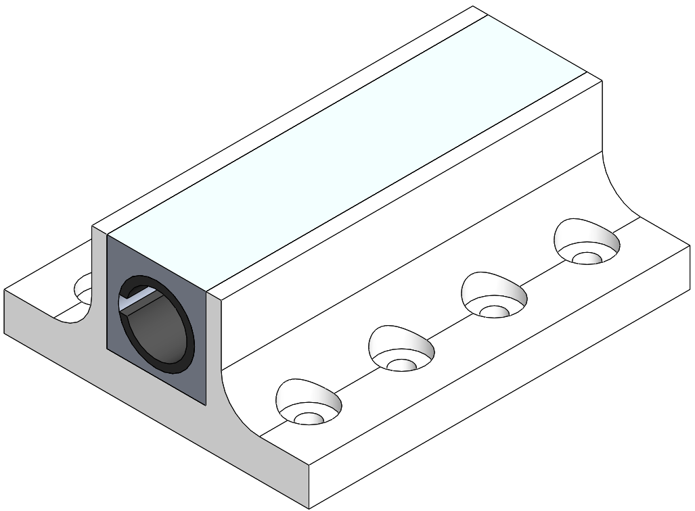
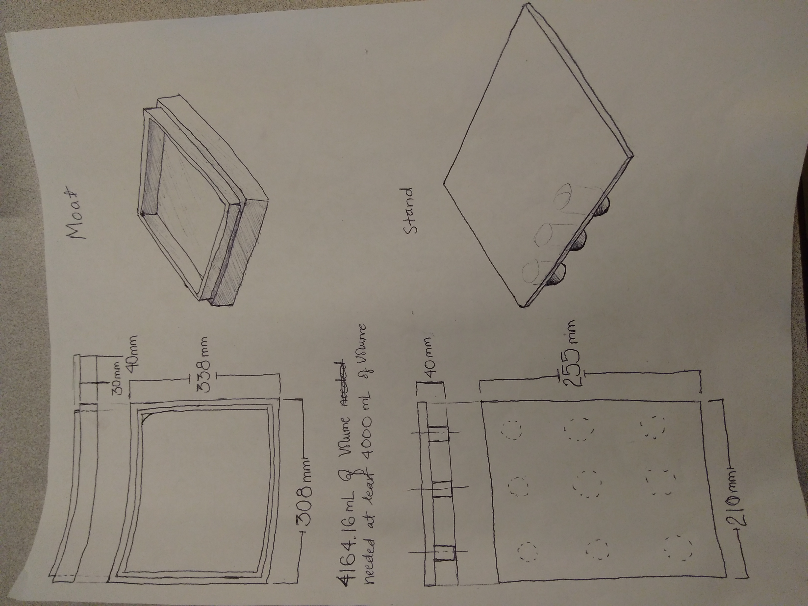
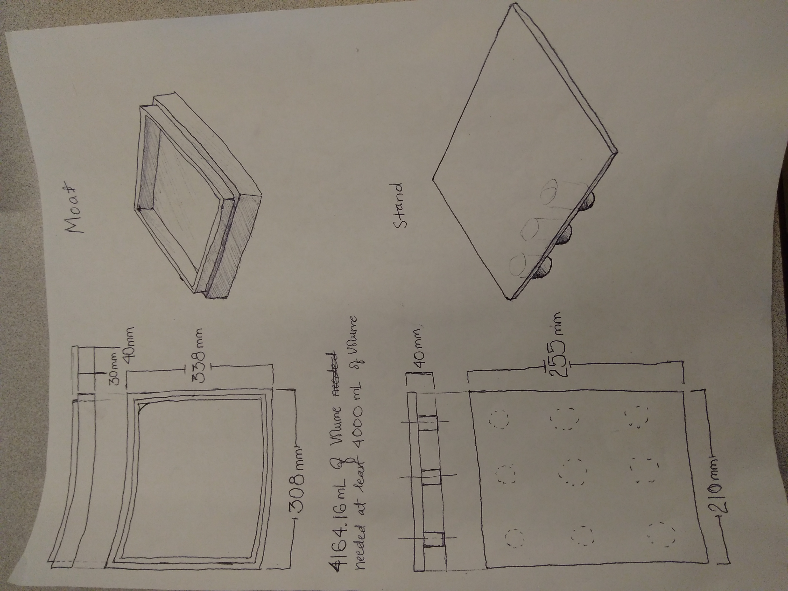
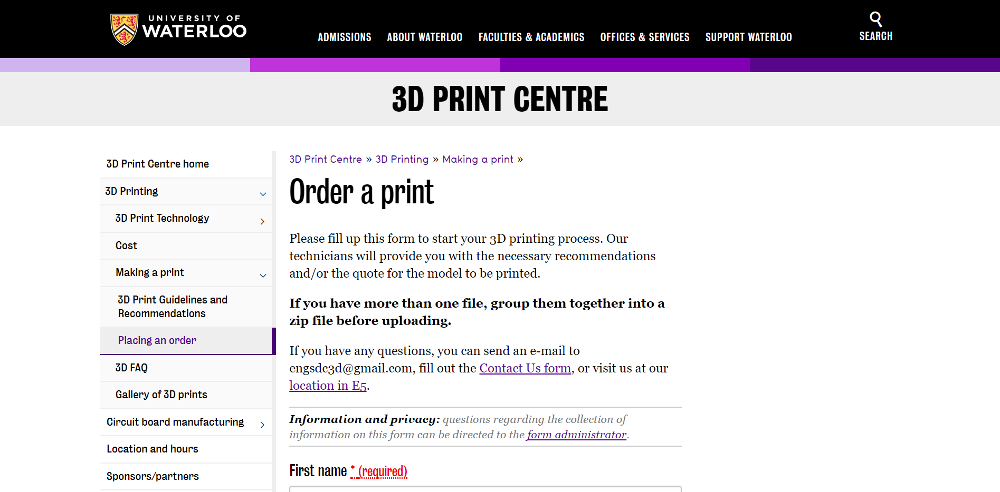

Projects
-
Project Boreas;UAV Designer at University of Waterloo Aerial Robotics Group (WARG) UAV Designer | June 2017 - August 2017
- Project Boreas, a fixed wing Unmanned Aerial Vehicle (UAV)
- Designed the wings, the tail, the wing mounts, the motor mounts and the tail mount
- Used SolidWorks to make the individual CAD files and the assemblies. Also used AutoCAD to make imprints for laser cutter
- Fabricated parts using a laser cutter, FDM/FFF and SLA 3D Printers and milling machine
- Wrote a technical report detailing the design lifecycle of the Wing Connector
 CAD of parts of wing mount. 1) inner lining, 2) spar connector 3) fuselage connectorCAD of the wing mount assembly
CAD of parts of wing mount. 1) inner lining, 2) spar connector 3) fuselage connectorCAD of the wing mount assembly Wings assemblies CAD. Notice the motor mount on each wing.
Wings assemblies CAD. Notice the motor mount on each wing. CAD of the assembly of the plane including the fuselage and the nose cone which I did not design. I designed the wings, tail and the connectors.
CAD of the assembly of the plane including the fuselage and the nose cone which I did not design. I designed the wings, tail and the connectors. Assembly of the fabricated wing connector.
Assembly of the fabricated wing connector. A closeup of the fabricated connector.
A closeup of the fabricated connector. A closeup of the motor mount.
A closeup of the motor mount. -
Cell-phone stand project;3D Print Centre Engineering Assistant | Nov 2017 - Dec 2017
- Before the printing process gave lectures to 400 students and around 10 TAs about the 3D printing process and efficient ways of printing
- Worked with the University of Waterloo's IT department and Professors to get GrabCAD Print in some of the computer labs to help students keep track of the amount of materials
- Worked with Cimetrix Inc. to diagnose a problem with one of the two 3D printing machines which happened on the 3rd day of production. The machine had to be shut off for the rest of the production. I was left with one 3D Printer for the rest of production
- Printed ~380 cell-phone stands in about a week while maintaining regular printing service for other customers
 Part of the cell phone stands that I had printed
Part of the cell phone stands that I had printed -
Radio Controlled Plane;Side Project | Dec 2017 - PresentThis is my current side project. I have been designing the parts using CATIA and free hand sketches. It is almost done. I have also bought almost all of the parts required for it. The second phase of the project is to start the fabrication of the part. The plan is to use high quality styrofoam or similar material to make the fusulage. I am also learning how to solder parts for this project. The part should be done by the end of the term.
-
Fabrication of lego parts for marketing;3D Print Centre Engineering Assistant | Oct 2017 - Dec 2017I collaborated with WATiMake lab assistant to create slides comparing the FDM printing abilities in the the 3D Print Centre and the WATiMake lab. I was responsible for planning and leading meetings, seting deadlines and making sure the project was on track. I designed the Lego pieces using CATIA and Solidworks. We also 3D printed the lego pieces in both facilities as a physical comparision between two.
 Lego sets printed at the 3D Print Centre
Lego sets printed at the 3D Print Centre Lego sets printed at the WATiMake Lab
Lego sets printed at the WATiMake Lab -
Enclosure for NaOH soluble support remover;3D Print Centre Engineering Assistant | Sept 2017 - Dec 2017I instigated and designed an enclosure for a NaOH soluble support remover. I had to create a design feasible for fabrication using my skill level and resources available to me. I used CATIA and freehand sketches in order to come up with my designs. I used machine-shop tools like band-saw and milling machine to fabricate part of the enclosure. I also had to commissioned the welding of a part of the enclosure. The project resulted in a safer work space.
 The initial draft of the part 2The initial draft of the part 3
The initial draft of the part 2The initial draft of the part 3 -
Online Order Form;3D Print Centre Engineering Assistant | Sept 2017 - Dec 2017I had to design and creat an online form in the University of Waterloo's 3D Print Centre's website to decrease the order-to-production time. Before this, customers would directly send requests through the email. A lot of the customers failed to produce some crucial information frequently. Going back to them and asking for it meant initial order to production time was quite big, around 2-3 days. However, with the online order form actively asking for all the required information, the order to production time decreased to 1-2 days. I made many changes after the initial release of the form and maintained it throughout.Order form from the website which I also maintained and tweaked.
-
Sensor Development;Side project | May 2017This project was ispired by 1B mech-days where we had to create a sensor to measure level of water in a bucket. Then me and my team made a electric sensor. Later, I created a mechanical sensor to measure the level of water in any enclosed container to be used as a substitute for the electrical sensor. I used CATIA to create a 3D CAD model. I also created a prototype to understand the shortcomings of design. The most important thing that I learned was that part cannot let any water for long term functional capacity.
-
Project leader;Mural painting in Winston Churchill CI library | Dec 2015 - July 2016I was responsible for planning of the project. I also had to organise the other students. I also had to manage the resources that were allocated for this project by the school librarian, me and other students. The project was 8 months long. During that time, I worked 2.5+ hours every day excluding weekends and holidays.